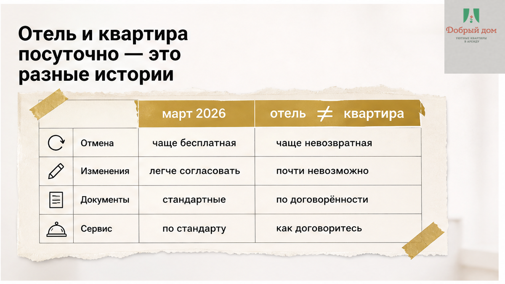
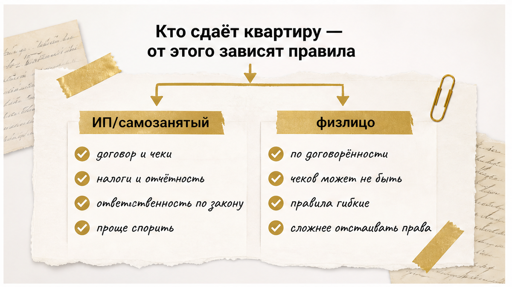

Деньги ушли. Предоплата за квартиру на август уже переведена, а через неделю поездка сорвалась: отменили командировку, ребёнок попал в больницу, машина встала.
Пишете хозяину — в ответ: «Оплата невозвратная, у нас оферта».
Вот здесь не надо спорить на эмоциях. Сначала сохраните переписку, чек, бронь с датами и суммой. Потом письменно спросите: «Сколько вы удерживаете и какие фактические расходы уже понесли по моей брони?»
Очень часто после этого «невозвратно» превращается в разговор о том, какую сумму реально вернут.
Быстрый инсайт:
А теперь по порядку: почему новости про отели не всегда помогают, где чаще всего подставляют и что спросить до перевода денег.
Весной 2026 года по лентам разошлась новость: гость отменяет бронь до дня заезда, а отель возвращает предоплату полностью.
Такое правило относится к гостиницам — объектам, которые прошли классификацию и работают как средство размещения.
Обычная квартира посуточно у частника — не гостиница. Даже если в ней есть халаты, кофемашина и уборка каждые три дня.
Поэтому фраза «закон уже всё решил, мне обязаны вернуть деньги» для квартиры автоматически не срабатывает.
Здесь важны три вещи: кто сдаёт квартиру, что написано в условиях брони и какие расходы хозяин реально понёс.

Если квартиру системно сдаёт ИП, самозанятый или компания, для гостя это обычно услуга. От неё можно отказаться, но хозяин вправе удержать фактически понесённые расходы.
Не штраф. Не упущенную выгоду. Не «мы бы за эти даты заработали больше».
Расходы должны быть реальными и подтверждаемыми: комиссия площадки, оплаченный клининг, выезд горничной, расходники, купленные под ваш заезд.
Если квартиру сдаёт физлицо без статуса и это разовая сделка, история другая. Тогда многое зависит от договора и его формулировок.
Поэтому вопрос «вы ИП, самозанятый или частное лицо?» — не праздное любопытство. Это вопрос про ваши деньги.

Оферта вместо разговора. Человек забронировал номер в гостевом доме, отменил бронь больше чем за пять дней до заезда, но получил отказ в возврате 12 000 ₽: «Так написано в оферте».
Самой записи в оферте недостаточно, чтобы удержать всю предоплату. Речь должна идти о подтверждённых расходах. Условие «не возвращаем ни при каких обстоятельствах» само по себе может оказаться недействительным.
Окно бесплатной отмены на шесть часов. Бывает, что до заезда ещё два месяца, но бесплатно отменить бронь можно было только в первые шесть часов после оплаты.
Если за два месяца хозяин ещё ничего не потратил, просите расчёт. С него и начинается письменное требование.
Слово «задаток» в переписке. Если платёж не оформлен как задаток по правилам, на практике его чаще рассматривают как аванс. Аванс при несостоявшейся сделке возвращается.
Одно слово в сообщении и правильно оформленный задаток — не одно и то же.
Тариф отмены на площадке. У площадок бывают гибкие, умеренные и строгие тарифы. Названия и проценты меняются, поэтому конкретные условия лучше смотреть прямо перед оплатой.
Две минуты в переписке могут сэкономить много нервов. Спрашивайте до перевода денег.
Если на все пять вопросов отвечают спокойно и по делу — хороший знак.
Если в ответ звучит «не душните, всё нормально будет», это тоже ответ.
Полный список вопросов с готовыми формулировками для чата — в нашем канале Telegram «Добрый дом».
Спокойно. Здесь важна не громкость, а зафиксированные сообщения.
Ключевое слово — подтверждённые расходы.
Не «мы держали даты» и не «могли бы сдать дороже». Только то, что действительно потрачено под вашу бронь.
И не путайте предоплату с залогом. Предоплата — деньги за проживание, которые переводят до заезда. Залог — сумма за сохранность квартиры, которую возвращают на выезде. Там свои правила и ловушки: перевёл залог за посуточную, на выезде сказали «не вернём».
Мы сдаём квартиры посуточно в Тюмени в сегменте комфорт+ и тоже берём предоплату.
Разница в том, что происходит вокруг неё.
Условия отмены гость получает текстом до перевода денег — в том же мессенджере, где бронирует. Не ссылкой, которую нужно долго искать, а сообщением, к которому можно вернуться.
Если планы изменились, пишете менеджеру. Мы разбираем ситуацию по датам и прямо говорим, какая часть возвращается и за сколько дней деньги придут на карту.
Перед заездом отправляем инструкцию: адрес, подъезд, этаж, способ попасть в квартиру и контакты на случай вопросов. О бесконтактном заселении в Тюмени писали отдельно: как проходит бесконтактное заселение посуточно.
Условия по конкретной квартире и датам лучше уточнить у менеджера. Они зависят от объекта и сезона. Август в Тюмени — плотный месяц, свободные окна закрываются быстро.
Написать нам можно в MAX или менеджеру в Telegram. Инструкцию и условия отмены пришлём до оплаты.
Сама формулировка ещё ничего не решает. Если квартиру сдаёт ИП или самозанятый, удержать можно подтверждённые расходы, а не всю сумму только из-за записи в оферте. Начните с письменной просьбы прислать расчёт.
Попросите показать расчёт. За два месяца до заезда у хозяина обычно ещё нет расходов, кроме возможной комиссии площадки. Параллельно напишите в поддержку площадки и приложите бронь, чек и подтверждение отмены.
Не обязательно. Задаток — это оформленная конструкция с правилами, а не просто слово в сообщении. Если оформления не было, платёж чаще рассматривают как аванс, который при несостоявшейся сделке возвращают.
Комиссию площадки, оплаченную уборку, выезд сотрудника и расходники, купленные под ваш заезд. Не штраф за сам факт отмены и не упущенную выгоду.
Планируете поездку — задайте пять вопросов до перевода денег и сохраните ответы.
Отмена уже случилась — соберите бронь, чек и подтверждение отмены, затем письменно попросите расчёт удержания.
Ищете квартиру посуточно в Тюмени с понятными условиями — смотрите варианты на сайте «Добрый дом» или звоните: +7 (993) 574-83-22.
Условия по вашим датам пришлём текстом до оплаты.